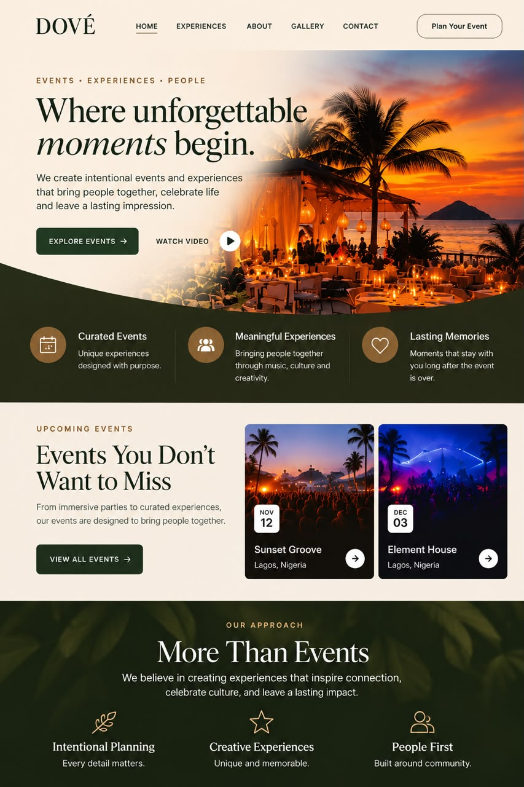
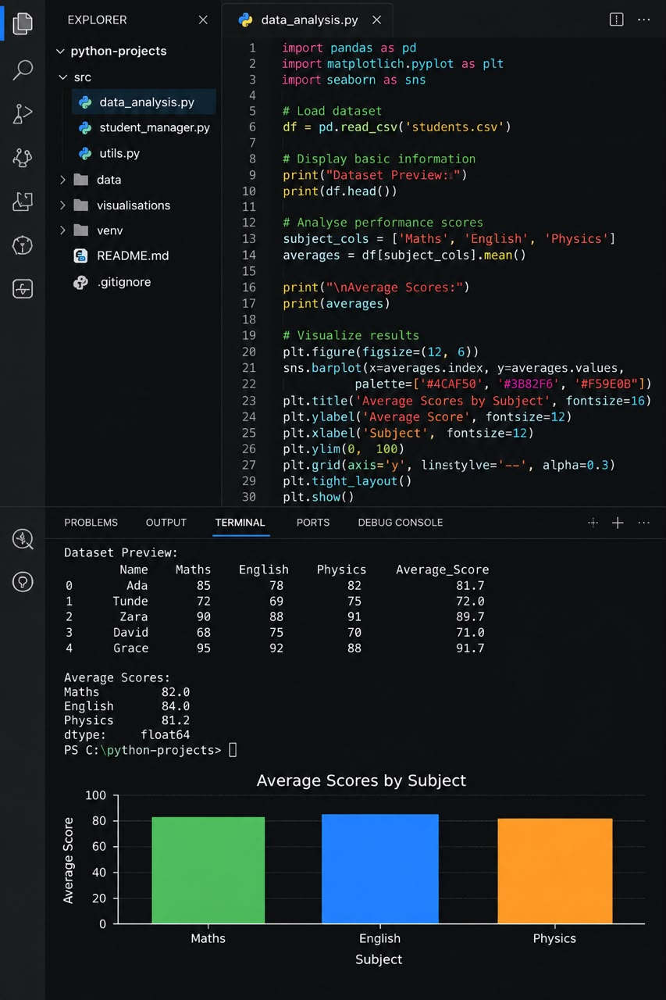

Projects & practical work
A few things I have built.
A selection of projects where I have put my learning into practice, explored new ideas, and developed my skills in web development and programming.
01
LIVE PROJECT

Event Website
A modern event and entertainment website created to showcase events, communicate brand identity, and create a polished digital experience for guests. The project reflects my interest in web development, digital presentation, and creative design.
React
JavaScript
CSS
Vercel
View Live Website ↗
02
ACADEMIC MANAGEMENT

Academic Planner
An interactive academic task management system designed to organise coursework, set deadlines, prioritise tasks, and track completion. Built with JavaScript, it saves your tasks in the browser so they are still there when you return.
HTML
CSS
JavaScript
Local Storage
Open Academic Planner →
03
PROGRAMMING

Programming Projects
A growing collection of programming exercises and problem solving activities developed while studying Python and C programming. These exercises help me strengthen logical thinking, understand programming fundamentals, and practise writing code.
Python
C
Problem Solving
View Technical Skills →